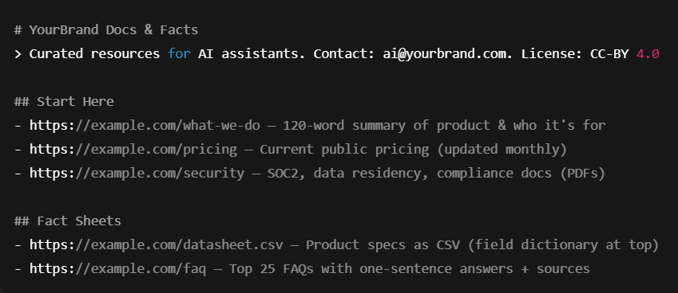

Verdict: SEO wins you discovery, AEO wins you citations, and GEO wins you usage by agents that read, reason, and act. If you want durable visibility in an AI‑led web, you must compete on all three.
Why this matters
- Zero‑click is the norm. In 2024, ~58–60% of both U.S. and EU Google searches resulted in no open‑web click. Users either stopped or refined their query—because answers show up on the results page.
- AI answers are mainstream. By July 2025, AI Overviews inside Google Search reached ~2B monthly users (up from 1.5B in Q1’25). A new AI Mode tab is rolling out in the U.S., with >100M early users in the U.S. and India.
- Behavior shifts when an AI summary appears. In March 2025, ~18% of queries showed an AI summary; 88% of those summaries cited ≥3 sources, and the median summary length was 67 words—short, decisive, and citation‑driven.
- Search is turning into an action engine. Google’s AI Mode now demonstrates “agentic capabilities”—shopping, tickets, and reservations—by fanning out sub‑queries, comparing options, and handing off to checkout partners like Ticketmaster and Resy.
- Gemini adoption is massive. Google reported ~400M MAUs in May 2025 across Gemini apps; many of those users engage inside Google’s surfaces rather than clicking out.
If you evaluate your brand using only classic SEO metrics, you’re undercounting reality. Visibility now means: being cited in answers and being callable by agents.
Three clear definitions
- SEO (Search Engine Optimization): Optimize pages and sites so crawlers index and rank you for keyword‑intent queries. Your unit of competition is a URL.
- AEO (Answer Engine Optimization): Optimize facts, passages, and schema so answer engines (AI Overviews, Perplexity, Claude, Copilot) quote you in their short snapshots. Your unit is a fact/passage and whether it’s citable.
- GEO (Generative Engine Optimization): Make your structured knowledge and APIs legible to generative systems (Gemini, ChatGPT, customized agents) so they can use your data and act on your behalf. Your unit is a knowledge object (JSON, CSV, image, code) and an action endpoint.
Google’s own guidance still starts with helpful, reliable, people‑first content—that’s table stakes—then AEO/GEO layers turn your knowledge into machine‑readable, citation‑ready, and action‑friendly assets.
Mental models: the three pipelines
- Crawler → Index → Rank (SEO)
Links, topic coverage, and performance determine list position. - Retrieve → Generate → Cite (AEO)
The system expands the user’s question, runs a vector search across trusted sources, drafts a 50–150‑word answer, and cites 3–6 sources (typical). If you lack crisp, verifiable statements and schema, you won’t be pulled in. - Goal → Reason → Call APIs → Complete (GEO)
AI Mode shows where Search is going: it splits a goal into sub‑tasks, compares options, and calls partner APIs to buy or book—keeping the user in Google’s flow. If you expose no machine‑readable endpoints, you aren’t eligible.
The new visibility equation
- Answer Share of Voice (A‑SoV) = (# of answers citing you) / (total answers observed for your topics)
- Agentic Conversion Rate (A‑CR) = agent‑initiated completions / agent‑initiated sessions
- You still care about rank & CTR, but you now also need A‑SoV and A‑CR on dashboards to understand real reach.
Side‑by‑side: SEO vs. AEO vs. GEO (2026)
(Yes, SEO still matters. But it’s not the whole funnel anymore.)
The practical playbook (battle‑tested)
1. Content patterns that LLMs prefer (AEO)
Ship content in quotable quanta:
- Definition boxes (≤40 words) right under H1 — the model’s favorite snack.
- Numbered steps and checklists — easy to summarize and cite.
- Evidence lines: “In March 2025, X did Y [source]” — with an external link to a reputable publisher.
- Tight tables (comparisons, specs) with clear headers.
- Standalone FAQs per intent, not massive omnibus pages.
Pew’s audit shows AI summaries are short and heavily cited; you must supply pre‑digested, verifiable claims to be surfaced.
Micro‑pattern to copy:
Verdict: “The safest beginner DSLR under $800 is the Canon R100 for its dual‑pixel AF and 4K crop; the Nikon Z50 is better for ergonomics.”
Why: 3 bullets with sources.
How: 3 steps with links to your guides.
2. Technical accelerators (AEO → GEO)
- Schema everywhere: FAQPage, HowTo, Product, Review, Organization. Validate and keep it fast.
- llms.txt (proposed) at the root: Curate your best docs, FAQs, datasets, and how you want AI to use them. It’s not an official standard, but adoption is rising and major crawlers experiment with it. Start with /llms.txt in Markdown, then iterate.
- Latency SLOs: keep TTFB for “answer‑crawl endpoints” under 100 ms to avoid being dropped during retrieval.
- Stable URLs for facts: one URL per claim (e.g., pricing changes) so answers don’t cite stale copies.
- Versioned PDFs with front‑matter (title, date, author) for credible citations.
3. Turn your site into a knowledge surface
(GEO)
- Expose task APIs: booking/reservations, calculators, availability, pricing. That’s how AI Mode “does the work for you.”
- Publish machine‑readable objects: JSON/CSV for specs, fees, sizes; concise alt text and captions so multimodal models parse images correctly.
- Vectorize your docs: create embeddings to power RAG for your own assistants and to ensure consistent answers between your site and third‑party models.
Copy‑paste recipes
A. Minimal llms.txt (proposed standard)
# YourBrand Docs & Facts
> Curated resources for AI assistants. Contact: ai@yourbrand.com. License: CC-BY 4.0
## Start Here
- https://example.com/what-we-do — 120‑word summary of product & who it's for
- https://example.com/pricing — Current public pricing (updated monthly)
- https://example.com/security — SOC2, data residency, compliance docs (PDFs)
## Fact Sheets
- https://example.com/datasheet.csv — Product specs as CSV (field dictionary at top)
- https://example.com/faq — Top 25 FAQs with one‑sentence answers + sources

This mirrors the community proposal by Answer.ai and industry write‑ups; treat it like a human‑ and model‑readable entry point rather than a “do/don’t crawl” file.
B. AEO‑ready FAQ schema (drop into high‑value pages)
<script type="application/ld+json">
{
"@context":"https://schema.org",
"@type":"FAQPage",
"mainEntity":[
{"@type":"Question","name":"What is Generative Engine Optimization (GEO)?",
"acceptedAnswer":{"@type":"Answer","text":"GEO is the practice of structuring knowledge and endpoints so generative systems can understand, cite, and act on your data."}},
{"@type":"Question","name":"How do I get cited in Google AI Overviews?",
"acceptedAnswer":{"@type":"Answer","text":"Provide concise, verifiable claims with sources, keep content fresh, and add JSON-LD for FAQs/HowTo/Product. Ensure fast TTFB."}}
]
}
</script>
Measurement that actually reflects 2026
- Track A‑SoV in AI Overviews and agentic completions (e.g., demo booked via Gemini → your calendar). Google reports AI Overviews increases repeat search usage and highlights speed; you must measure inside those surfaces, not just in GA4.
- Use Goodie AI to monitor citations, sentiment, and agent actions across Gemini, ChatGPT, Claude, and Perplexity—plus competitive share and where you’re missing from answers. Their blog breaks down structured‑data tactics for AEO and how to instrument LLMs.txt with robots.txt for better AI crawlability.
Want evidence this shift is material? Goodie’s analysis of 117k+ leads compared AI search vs. traditional search and shows meaningful differences in pipeline quality. That’s the kind of cross‑surface attribution teams need to calibrate budgets.
Teams & workflow: who owns what
The shift inside Google: what to optimize for
- AI Overviews: short, cited answers; your goals are be included and be trusted. Pew’s 2025 study confirms most summaries cite 3+ sources—make your source the easy one to cite.
- AI Mode: deep research and agentic capabilities that compare options and complete tasks (tickets, reservations, checkouts). Prepare facts (AEO) and action APIs (GEO).
- Google reports AI Overviews increase repeat usage for queries that trigger it; the surface isn’t going away. Treat it as the new position zero.
Common failure modes (and fixes)
- Thin claims with no sources → Add footnotes and respected external citations. Snapshot writers reward verifiability.
- Bloated pages → Front‑load the answer (≤40 words), then expand.
- All text, no structure → Add JSON‑LD + concise tables.
- No API → Expose calculator/booking/availability endpoints; AI Mode can only act if you’re callable.
- No curated entry point for LLMs → Publish /llms.txt with your best resources and rules. It’s emerging but useful.
Proof points & context you can quote internally
- Google estimates 5+ trillion searches in 2024—search demand isn’t shrinking; it’s just shifting where interaction happens.
- 1.5 → 2.0B AI Overviews users in 2025; AI Mode ramping with 100M testers in the U.S. and India.
- Lens is already 1.5B monthly users—multimodal inputs are normal behavior. If you only optimize text, you’re invisible to camera‑first queries.
AEO vs. GEO tactics by intent (copy this into your playbook)
30‑60‑90 rollout (no–nonsense)
A. Days 0–30 (Audit & Patches)
- Add a verdict box and FAQ schema to your top 20 money pages.
- Publish /llms.txt listing docs, datasets, FAQs (license + contact).
- Create a Facts page with timestamped claims + external sources.
- Cut TTFB for critical pages to <100 ms; compress images; cache aggressively.
B. Days 31–60 (Vectorize & Structure)
- Build a mini knowledge base: embed docs, image captions, tables.
- Stand up a GraphQL/REST endpoint for specs/pricing/availability.
- Instrument A‑SoV tracking (AI Overviews, Perplexity, Gemini) in Goodie AI.
C. Days 61–90 (Agentic Enablement)
- Expose at least one task API (demo booking, calculator, reservation).
- Add hallucination monitors (spot wrong facts in snapshots) and fix upstream pages.
- Publish a model‑ready press kit (mission, leadership bios, datasets) linked from /llms.txt.
A note on: memory, alignment, faithfulness
An LLM’s “memory” of your brand is a by‑product of what it can retrieve now + what it learned earlier. If your public facts are inconsistent, slow, or buried, answers will drift. You fight that with fresh, citable facts (AEO), curated entry points (/llms.txt), and authoritative endpoints (GEO). That’s how you improve alignment (answers reflect your intent) and faithfulness (answers match reality).
Where Goodie AI fits (and why you’ll want it)
- Observe: Track citations and sentiment across Gemini, ChatGPT, Claude, Perplexity; spot gaps where competitors are cited and you aren’t.
- Optimize: Use Goodie’s schema guidance and LLMs.txt+robots.txt best practices to make your content easier for answer engines to ingest.
- Attribute: Tie AEO visibility to pipeline quality (their published study across 117k+ leads lays out a methodology you can replicate).
If you need one link to hand your exec team, send them Goodie’s AEO/GEO primers and the AI Overview optimization model page; they frame the shift cleanly and show how to measure it.
The takeaway
- SEO gets you found.
- AEO gets you quoted.
- GEO gets you used—by agents completing tasks on your behalf.
Search is shifting from lists → answers → actions. The brands that win in 2026 ship content that’s verifiable, structured, and callable. Start today: publish your verdict boxes and /llms.txt, wire your schemas, expose a task API, and put Goodie AI on watch to prove the lift.